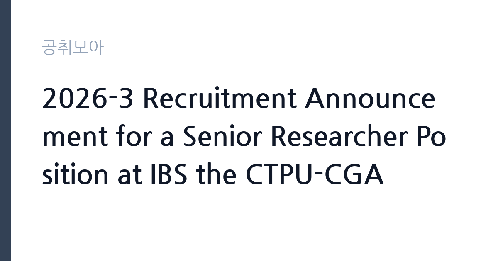

[공공기관] 2026-3 Recruitment Announcement for a Senior Researcher Position at IBS the CTPU-CGA
기초과학연구원 · 대전 · 마감 2026-12-09 (D-38) · 출처 잡알리오

한눈에 보는 모집 조건
| 기관 | 기초과학연구원 |
|---|---|
| 공고명 | 2026-3 Recruitment Announcement for a Senior Researcher Position at IBS the CTPU-CGA |
| 고용형태 | 정규직 |
| 근무지 | 대전 |
| 게시일 | 2026-11-02 |
| 마감일 | 2026-12-09 (D-38) |
지원자격, 이렇게 읽으세요
- 공공기관 채용공시
- 세부 조건은 원문 공고문 확인
이 공고는 응시자격 대부분을 첨부된 직무기술서(Job Description)로 넘기고 있습니다. 공고문에 명시된 공통요건은 네 가지입니다. 국가공무원법 제33조와 IBS 정관이 정한 임용요건을 충족해야 하고, 부패방지법 제82조에 따른 비위면직자에 해당하면 채용이 취소됩니다. 해외여행에 결격사유가 없어야 하고, 남성 지원자는 병역을 마쳤거나 면제받아야 합니다. 모든 요건은 접수 마감일까지 갖춰야 합니다. 알리오 공시 기준 학력정보는 박사이며 채용구분은 신입과 경력을 모두 포함합니다. 우대사항은 장애인, 취업지원대상자, 여성과학기술인입니다. 장애인증명서를 내면 5점, 국가유공자 취업보호 증명서를 내면 5점에서 10점이 가산됩니다.
이 공고의 포인트
첫 번째 포인트는 연구 분야입니다. CTPU는 우주론과 입자이론을 다루는 이론물리 연구단이고 CGA는 Cosmology, Gravity and Astroparticle Physics 그룹입니다. 우주론, 중력, 우주입자물리 분야에서 연구 실적을 쌓은 박사에게 맞는 자리입니다. 두 번째는 영문 공고라는 점입니다. 서류와 면접이 영어로 진행될 가능성이 높고, 연구계획서와 논문 목록을 영문으로 준비해야 합니다. 세 번째는 여성과학기술인 우대입니다. 여성과학기술인 육성 및 지원에 관한 법률 제2조에 해당하는 지원자는 우대 대상으로 명시되어 있습니다. 네 번째는 고용형태입니다. 알리오 공시상 비정규직으로 분류되어 있어 계약 기간과 갱신 조건을 원문에서 반드시 확인해야 합니다.
전형은 어떻게 진행되나
전형은 1단계 서류전형, 2단계 면접전형으로 단순합니다. 공고문은 세부 평가 방식과 배점을 첨부 직무기술서로 안내하고 있어, 지원 전에 첨부파일을 내려받아 확인해야 합니다. 서류 단계에서는 연구 실적과 연구계획의 적합성을 봅니다. 면접 단계에서는 연구 발표와 질의응답이 중심이 될 가능성이 큽니다. 최종 합격자 발표일은 공고문에 날짜로 제시되어 있지 않고, 전형단계별 결과확정일도 아직 비어 있습니다.
원문에서 확인한 전형 방식
ㅇ Candiates who meet the requiremens stated in the job opening - For detailed information, please see the attached job opening [Required qualifications] ㅇ Must be in compliance with the requirements for appointments as specified in Article 33 of the State Public Officials Act and IBS statutes. ㅇ If candidates are found to be former public officials dismissed for corruption as set forth in Article 82 of the Act on the Prevention of Corruption and the Establishment of the Anti-corruption and Civil Rights Commission, the job offer will be withdrawn. ㅇ Must have no restrictions traveling o
이런 분께 추천해요
- 우주론·중력·우주입자물리 분야 박사 학위 소지자. CTPU-CGA 그룹의 연구 주제와 직접 맞닿은 실적이 필요합니다.
- 해외 연구기관에서 포닥 또는 연구원으로 일한 경력이 있는 분. 해외여행 결격사유가 없다는 요건이 별도로 명시되어 있습니다.
- 여성과학기술인. 공고문이 우대 대상으로 명시하고 있어 동점 상황에서 유리하게 작용할 수 있습니다.
지원 전 체크리스트
- 첨부 직무기술서의 세부 응시자격을 확인했는가. 공고문 본문은 요건을 직무기술서로 위임하고 있습니다.
- 영문 이력서와 연구실적 목록, 연구계획서를 준비했는가. 공고 자체가 영문으로 작성된 정규직 연구자 공모입니다.
- 병역 요건을 충족하는가. 남성 지원자는 병역 필 또는 면제 사실이 접수 마감일까지 확인되어야 합니다.
- 장애인·국가유공자 증명서를 발급받았는가. 제출해야만 가점이 적용되고, 미제출 시 0점 처리됩니다.
모집 일정과 제출 타이밍
접수는 2026년 11월 2일 월요일부터 12월 9일 수요일까지 약 5주간 진행됩니다. 기초과학연구원 영문 채용 페이지의 온라인 접수를 이용하며, 지원서와 동의서(Consent form) 양식이 함께 제공됩니다. 공고문은 모든 요건을 접수 마감일까지 충족해야 한다고 명시하고 있으므로, 학위 증명이나 병역 관련 서류는 미리 준비하는 편이 안전합니다. 서류전형과 면접전형 일정은 별도 안내 방식이므로 접수 후 IBS 채용 페이지를 주기적으로 확인해야 합니다.
직무 이해하기: 공공기관
기초과학연구원은 2011년 설립된 국내 기초과학 연구기관으로 대전 본원과 여러 캠퍼스 연구단을 운영합니다. CTPU는 이론물리 연구단으로, 우주론과 입자이론, 중력 이론을 다룹니다. CGA 그룹은 우주론과 중력, 우주입자물리를 결합한 연구를 진행합니다. 시니어 연구자는 독립적인 연구과제를 설계하고 수행하면서 그룹 내 주니어 연구자와 박사후연구원의 연구를 지도하는 역할을 맡습니다. 실무는 논문 작성과 세미나 발표, 국제 공동연구 참여, 연구비 집행 관리로 구성됩니다. 이론 연구 분야라 실험이 아니라 계산과 모델링, 공동연구가 업무의 중심입니다.
자기소개서 작성 팁
영문 연구직 공고의 자기소개서는 연구계획서에 가깝게 쓰는 편이 효과적입니다. 첫 문단에서는 본인의 연구가 어떤 관측 또는 이론적 난제를 다루는지 한 문장으로 밝히십시오. 두 번째 문단에서는 대표 논문 두세 편을 골라 각각의 기여를 구체적으로 설명하십시오. 인용 횟수보다 본인이 수행한 역할과 방법론이 중요합니다. 세 번째로는 CTPU-CGA에서 3년간 수행할 연구주제를 제시하고, 그룹 구성원과 어떤 협업이 가능한지 적으십시오. 마지막으로 연구비 확보 계획이나 국제 공동연구 경험이 있으면 한두 문장 덧붙이십시오.
면접 준비 포인트
면접은 연구 발표와 질의응답 형식이 될 가능성이 큽니다. 발표는 20분 내외로 준비하고, 첫 장에서 연구 질문과 결론을 함께 제시하는 구조가 평가에 유리합니다. 예상 질문은 세 갈래입니다. 첫째 대표 논문의 방법론과 한계, 둘째 향후 5년 연구 방향과 IBS와의 적합성, 셋째 공동연구 및 학생 지도 경험입니다. 답변은 결론부터 말하고 근거를 붙이는 순서로 하십시오. 영어 인터뷰가 진행될 수 있으므로 주요 용어와 연구 요약은 영어로 소리 내어 연습해 두는 편이 좋습니다.
급여·근무조건 읽는 법
공고문과 알리오 공시에 이번 직위의 연봉 금액은 명시되어 있지 않습니다. 대신 기관 전체 수준은 알리오 2025년 결산 공시로 확인할 수 있습니다. 기초과학연구원의 일반정규직 1인당 평균보수액은 8,863만원, 신입사원 초임은 4,297만원입니다. 평균보수액은 기본급에 고정수당, 성과상여금, 급여성 복리후생비를 합산한 값이라 월 기본급과는 차이가 큽니다. 이번 직위는 시니어 연구자로 경력과 연구실적을 반영해 보수가 정해지므로, 신입 초임을 기준으로 판단하면 실제와 어긋납니다. 고용형태가 비정규직으로 공시되어 있어 계약 기간과 처우는 원문 직무기술서와 채용 담당자 확인이 필요합니다.
자주 묻는 질문
- 박사 학위가 꼭 필요한가요?
알리오 공시 기준 학력정보가 박사로 기재되어 있습니다. 세부 전공과 경력 요건은 첨부된 직무기술서(Job Description)에 따르므로, 지원 전 해당 문서를 확인해야 합니다. - 한국어가 서툴러도 지원할 수 있나요?
공고가 영문으로 작성되어 있고 서류 양식도 영문입니다. 다만 근무지가 대전 본원이므로 실제 업무 언어 조건은 원문 공고와 채용 담당자에게 확인하는 편이 안전합니다. - 우대 가점은 어떻게 적용되나요?
장애인증명서 제출 시 5점, 국가유공자 취업보호 증명서 제출 시 5점 또는 10점이 평가 과정에서 가산됩니다. 증명서를 내지 않으면 가점은 적용되지 않습니다.
함께 보면 좋은 공고
[공공기관] 대한적십자사 인천사할린동포복지회관 직원(요양보호사) 채용 공고 — 마감 2026-11-17[공공기관] 건설분야 기간제 근로자 채용공고 [HVDC건설본부] — 마감 2026-11-16[공공기관] 대한적십자사 인천사할린동포복지회관 직원(요양보호사) 채용 공고 — 마감 2026-11-17출처: 잡알리오 공개정보를 바탕으로 공취모아가 정리한 안내글입니다. 모집 조건·일정은 변경될 수 있으니 지원 전 반드시 원문 공고문을 확인하세요. 본 글은 정보 제공용이며 합격을 보장하지 않습니다.